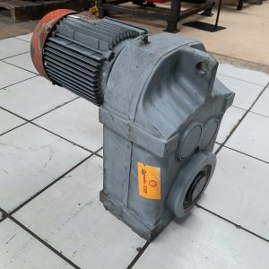

Dados principais
| TAG | RE-601242 |
|---|---|
| Fabricante | SEW |
| Tipo do equipamento | MOTOREDUTOR |
| Modelo | FA 77 |
| Potência | MOTOR 20 CV 4 POLOS SEW |
| Relação de redução | 15.64 |
| RPM entrada/saída | |
| Lubrificante | ISO VG 220 |
| Quantidade de óleo | 5.9 |
| Local / Área | REDUTOR DA ROSCA TRANSPORTADORAS CINZAS 01 ALIMENTAÇÃO |
| Observações | OS Nº 6030 - GOLD |
Acessos rápidos
RELATORIO FINAL indisponível
Lista de Peças
Manual
Fotos adicionais indisponível
Voltar para lista geral
Link desta página
https://goldredutoresinpasa-web.github.io/DATABOOK-INPASA/equipamentos/RE-601242/